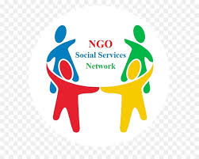

FAQ : What is an NGO?



stands for non-governmental organization. While there is no universally agreed-upon definition of an NGO, typically it is a voluntary group or institution with a social mission, which operates independently from the government.
NGOs or similar organizations exist in all parts of the world. What is considered an NGO in one country may not qualify as an NGO in another, as legal definitions, permitted activities, monitoring, and oversight differ from country to country. The term can encompass many types of organizations.
Although these terms are not necessarily interchangeable, an organization similar to an NGO may be called nonprofit, charity, non-profit organization (NPO), civil society organization (CSO), citizen sector organization (CSO), social benefit organization (SBO), an advocacy organization, voluntary organization, grassroots support organization (GSO), and non-state actor (NSA). You may also hear the terms independent sector, volunteer sector, and civil society during discussions about NGOs.